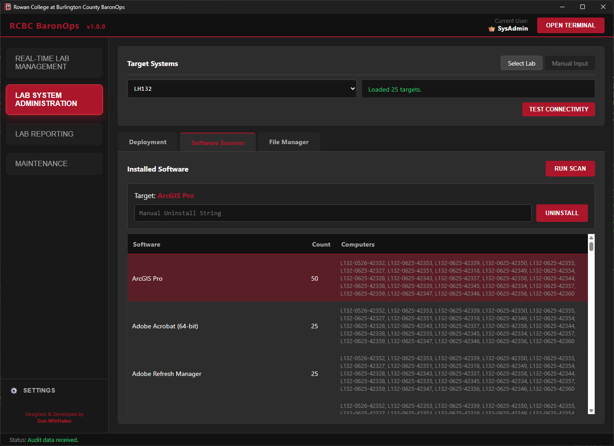
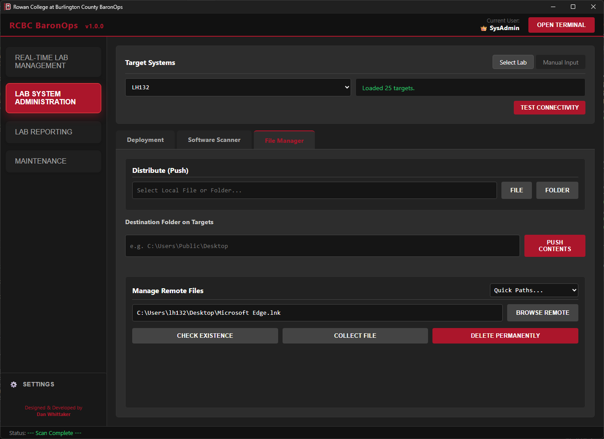
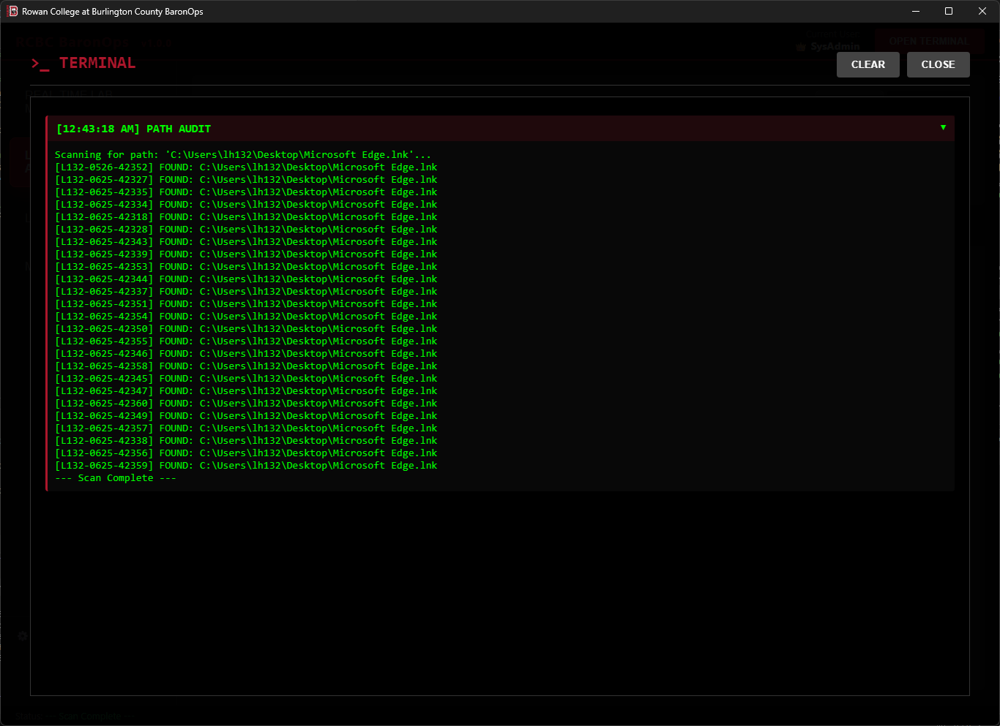
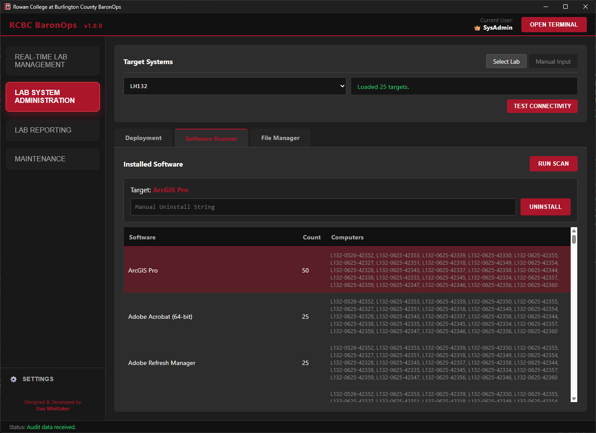
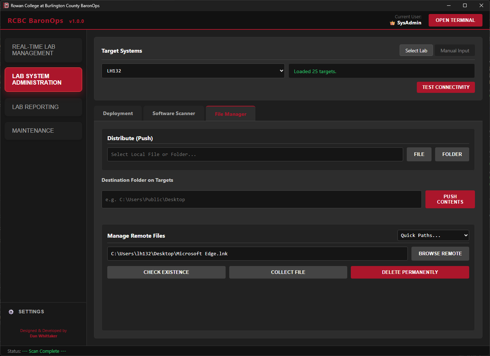
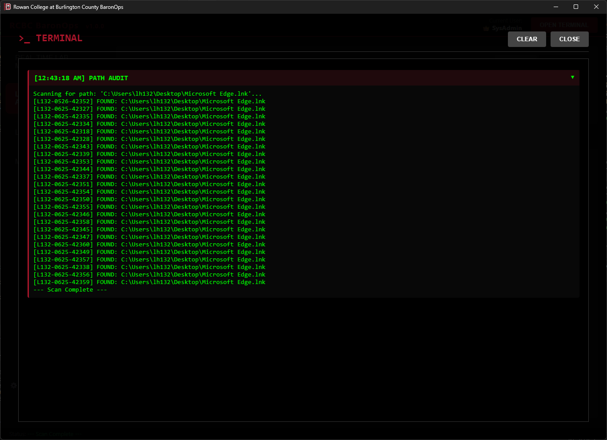

BaronOps
BaronOps Welcome Screen.
1. The Challenge
Managing a collegiate IT environment requires constant vigilance. Technicians previously had to physically travel between buildings, blindly walking into labs to check for issues.
Standard maintenance protocols dictate that labs auto-wake weekly for updates. A failure to check in during this window is a definitive indicator of hardware failure or network isolation. Without centralized monitoring, these 'Dark Systems' often go undetected for weeks, as discovery relies entirely on reactive user reporting. This issue is compounded by 'Silent Failures', students simply bypassing broken machines without submitting a ticket. This behavior masks critical outages, creating a false sense of infrastructure health that is often only revealed during high-stakes events like scheduled exams.
Furthermore, relying on rigid, once-a-week maintenance windows for software deployment proved inherently unreliable. If a system failed to wake or encountered an error during this narrow window, the deployment would fail silently. Administrators were often left in a "Wait & Hope" cycle, discovering missing software only days later. This forced technicians to waste hours manually intervening, turning on systems one by one and logging in to verify installs, with no way to know which specific machines actually needed attention.
2. The Solution: BaronOps
BaronOps is a unified "Command & Control" application that aggregates disparate systems, SCCM, Active Directory, Deep Freeze, Sassafras LabSight, and 25Live, into a single, modern interface.
Designed for portability, the application may also be installed on Technician Tablets. This transforms the device into a mobile "Lab Check" tool. A technician can walk into a room, tap "Wake," verify all 30+ computers are connected and properly logging in, test the printer, and move to the next room in seconds.
3. Technical Architecture
3.1 The Hybrid Bridge Engine
BaronOps leverages a hybrid architecture to combine the raw power of .NET with the flexibility of modern web technologies.
- Frontend (WebView2): A "Dark Mode" responsive UI built with HTML5/CSS3 and JavaScript. It handles all user interaction and visual feedback.
- Backend (.NET 8): A secure C# host that manages file system access, memory, and the application lifecycle.
- The OpsBridge: A bi-directional communication layer. When a user clicks "Wake" on the tablet, JavaScript signals the C# backend to execute the heavy lifting asynchronously, keeping the UI responsive.
3.2 Embedded PowerShell Execution
Instead of shelling out to `cmd.exe` (which is slow and insecure), BaronOps hosts an internal PowerShell 7.4 runspace. Scripts are compiled directly into the application DLL as Embedded Resources, ensuring they cannot be tampered with on the client machine. As of v1.0.1, the application is deployed utilizing a Multi-File Architecture to ensure the embedded PowerShell SDK can reliably resolve native snap-ins and module dependencies, providing rock-solid stability during parallel execution tasks.
4. Key Capabilities
Combines Wake-on-LAN and Session Management with a smart Logon ToS Bypass script. Features a background Auto-Refresh Engine to continuously poll live states without interrupting the user. Features a instant Remote Control Gateway to streamline support calls.
Wraps the local Deep Freeze CLI to bypass the sluggish enterprise console. Allows multiple technicians to Thaw, Freeze, or Lock labs simultaneously without server-side bottlenecks.
Cross-references Sassafras data to identify "Dark" systems that have not checked in for over 7 Days. Pinpoints hardware failures and network disconnects that missed the weekly wake cycle.
Queries 25Live to identify safe maintenance windows. Includes a Testing Ground finder that locates empty labs with 3+ hour vacancies for hardware repair or image testing.
Enables Real-Time Deployment (Thaw-Deploy-Freeze) between classes. Includes a Software Scanner for auditing and a Remote File Manager for bulk file collection or deletion.
Validates lab readiness via remote Printer Test Pages. Includes System Purge for one-click AD/SCCM removal and Time Set Manager for Sassafras schedule syncing.
5. Feature Deep Dive
BaronOps consolidates disparate administrative workflows into four distinct modules. Each module leverages Sassafras LabSight integration to dynamically populate lab lists, ensuring that even if a lab is reimaged or systems are renamed, the tool always targets the correct machines without manual configuration updates.
5.1 Real-Time Lab Management
Used primarily during "Lab Checks," this module provides immediate control and visibility. It includes a specialized Instructor Identification feature: systems flagged as "Instructor" in Sassafras are visually distinguished with an icon. This allows OIT staff to instantly identify and remote into a podium PC when a professor calls for help, bypassing the need to ask for a computer name.
Beyond standard power commands to wake, restart, and shutdown mass systems, this feature utilizes a smart Auto-Logon Bypass. Instead of relying on fragile UI automation to "click" buttons, BaronOps temporarily modifies the Windows Registry to suppress the legal Terms of Service notice, instantly triggering the native student auto-logon sequence for an entire lab.
v1.0.1 Update: Introduces a background 15-Second Auto-Refresh Engine. The UI silently polls the lab for live session states ("Quiet Mode") without throwing loading screens, giving technicians a near-instant read on lab utilization.
Bypasses the sluggish Deep Freeze Server process entirely. BaronOps wraps the local Command Line Interface (CLI) for instantaneous, direct control, allowing multiple technicians to Thaw, Freeze, or Lock systems simultaneously from anywhere on campus.
v1.0.1 Update: Implements State Caching (Memory Snapshots). If a machine is rebooting into a Thawed state and temporarily times out from the network, the UI intelligently preserves its last known lock state rather than dropping it from the console, eliminating data flicker during lab resets.
A streamlined UI for the SCCM Remote Control Viewer. It bypasses the bulky SCCM console and its complex context menus, allowing technicians to instantly identify a target (student or instructor) and launch a session, saving significant time during support calls and maintenance.
v1.0.1 Update: To streamline the user experience and reduce menu clutter, the standalone Remote Control tab has been removed. All Remote Control functionality has been integrated into the Power & Session tab.
Verifies lab readiness by querying a random online system in the selected lab. It checks driver status and spooler health on that single unit to validate the configuration for the entire lab, ensuring class readiness without checking every PC manually.
5.2 Lab System Administration
Restricted to SysAdmin Access. These tools enable mass-manipulation of file systems and software. They allow admins to target entire labs or manually input specific lists of machines.
 





Eliminates the "Wait & Hope" anxiety of overnight SCCM maintenance windows. Relying on scheduled tasks often leads to silent failures, systems that fail to wake or hang during installation, forcing staff to scramble the next morning to manually patch machines before deadlines.
BaronOps replaces this with a deterministic Thaw -> Deploy -> Verify -> Freeze workflow that executes in minutes, allowing admins to confirm 100% success immediately between classes.
Audits every computer in a lab to compare installed versions. It identifies "Silent Failures" where a specific machine might have missed a deployment that the rest of the lab received. It also facilitates Mass Uninstall commands to retire old software from a room instantly.
Uses a "Representative System" model to browse the file structure of a frozen lab. Admins can analyze one system to detect unwanted files (e.g., unauthorized shortcuts) or verify configuration placement. The tool supports Bulk Deletion and Bulk Collection (pulling logs/configs), as well as pushing files to the entire lab simultaneously.
5.3 Lab Reporting
Tools designed to visualize usage data and identifying hardware issues without, or prior to, physical walkthroughs.
Scans room schedules to identify maintenance windows of 1+ hours. Includes a Show Schedule detailed view for granular planning, allowing technicians to view all active classes to make their own decisions on planning maintenance tasks. Features a "Summer Mode" toggle to exclude Fridays during summer hours if applicable.
Scans specific rooms for systems that have not reported online in over 7 Days. Since labs auto-wake weekly, a system flagging on this report confirms a hardware or network failure, giving technicians a targeted repair list.
Aggregates Ghost Hunter data across the entire campus, providing a high-level health map of all labs and identifying safe maintenance windows for the day. Helping technicians prioritize their day and plan proactive repairs before students or faculty report issues.
5.4 Maintenance Utilities
Backend tools for lifecycle management and environment testing.
A unification tool that removes a decommissioned system from both Active Directory and SCCM in a single action, ensuring clean records before reimaging.
Scans the campus for labs with 3+ Hour vacancies (Today or Tomorrow). This allows SysAdmins to identify a safe "Sandbox" environment for testing new configurations without risk of interrupting a class.
Syncs Sassafras usage reporting with 25Live term schedules. This ensures analytics only track usage during actual class hours, providing accurate data for decision-making. It also includes a dedicated Holiday Manager tab, allowing admins to define campus closures so reports automatically disregard "closed" stretches during breaks.
5.5 Lifecycle & Feedback
To ensure stability and rapid iteration, BaronOps includes built-in mechanisms for self-maintenance and user feedback.
BaronOps Bug Reporting Interface
BaronOps eliminates "Version Drift." On every launch, it silently queries the central deployment share (`\\mtladfs2019\...`) for updates. If a newer version is detected, the UI logic intercepts the terminal event flag to gracefully display an "Update Available" button. Users are presented with the changelog and can initiate a seamless self-update process, ensuring all technicians are always on the same stable build.
Technicians can submit bug reports or feature requests directly from the console. This establishes a direct feedback loop between IT staff and myself as the developer, allowing for rapid identification and patching of edge-case errors found in unique lab environments.
6. Security & Compliance
Security is not a feature; it is the foundation of the BaronOps architecture. The application is built upon a "Defense in Depth" strategy, utilizing four distinct layers of protection to ensure that even if a device is lost or stolen, administrative integrity remains uncompromised.
BaronOps does not rely on local passwords. Upon launch, it queries the Active Directory domain controller to validate the user's live group membership.
- Technicians: Granted "Least Privilege" access. They can perform routine Lab Checks (Wake, Restart, Deep Freeze, Printer Health, System Purging, and Reporting) but are strictly blocked from destructive actions.
- SysAdmins: Detecting the "BaronOpsAdmin" token unlocks the "Red Zone" features: Software Deployment, Uninstalls, File System access, and Sassafras Time Set Management.
- UI Locking: Unauthorized features are not just hidden; they are physically disabled in the rendering engine. A technician cannot "accidentally" deploy software.
Hard-coded passwords are strictly prohibited. BaronOps utilizes a "Just-in-Time" loading mechanism for sensitive API keys (Sassafras, Deep Freeze, SCCM).
- Air-Gapped Source: Credentials are never stored in the application binary or source code.
- Secure Fetch: Keys are loaded at runtime from a secured, network share (`\\mtladfs2019\...`) restricted via NTFS permissions to IT Staff only.
- Encryption at Rest: The configuration file on the server is Base64 encoded and obfuscated, preventing casual reading even by authorized staff.
To prevent "Man-in-the-Middle" attacks or script tampering, BaronOps does not execute loose `.ps1` files from the disk.
- Embedded Resources: All 20+ PowerShell automation scripts are compiled directly into the application DLL as Embedded Resources.
- Tamper-Proof: A bad actor cannot modify a script (e.g., changing a "Wake" command to a "Format C:" command) because the code is baked into the signed executable. The app only runs what was compiled by the developer.
BaronOps respects and enforces the institution's existing security policies regarding remote management.
- Policy Enforcement: The application relies on Windows Remote Management (WinRM). Access to this protocol is strictly controlled via Group Policy Objects (GPO).
- Deny by Default: Even if a non-IT user obtained the BaronOps executable, the underlying network infrastructure would reject their connection attempts. The application cannot bypass the operating system's native firewall or user access control lists (ACLs).
Unauthorized Access Notice
Technician Unauthorized Notice
7. Future Roadmap: v2.0 & Beyond
The success of BaronOps v1.0.1 lies in its origin: it was not built in a vacuum, but developed in direct collaboration with the technicians who use it daily. By shadowing field staff and iterating on their specific pain points, the tool evolved into a solution that fits their actual workflow, rather than forcing them to adapt to the software.
BaronOps v2.0.0 will strictly adhere to this same "User-Centric" philosophy. As development shifts toward Staff & Faculty endpoint management, the feature set will be defined not by theoretical needs, but by the OIT team's real-world requirements.
Current collaborative planning sessions have identified three key pillars for the next major release:
- Safe One-to-One Management: Targeted tools for troubleshooting individual staff machines without disrupting neighbors.
- Secure Compliance Auditing: Automated checks to ensure staff devices meet security and patch-level standards.
- Efficient Onboarding: Automating the "New System" setup process, turning a manual provisioning task into a standardized, one-click workflow. And more...
8. Conclusion & Specifications
BaronOps represents the successful convergence of modern web aesthetics and rigorous system administration. By abstracting the complexity of WMI, Active Directory, and proprietary APIs behind a "Single-Pane-of-Glass," the application has fundamentally shifted the department's posture from Reactive Fire-Fighting to Proactive Fleet Management.
What began as a simple tool to check room schedules has evolved into the central nervous system of the campus IT department. It empowers a lean team to manage hundreds of endpoints with the speed and precision of a much larger workforce, ensuring that technology is always ready for instruction.
BaronOps v1.0.0 Production Build
Compliance & Data Privacy Notice
Institutional Context: This application was developed and deployed during my tenure as a Systems Administrator at Rowan College at Burlington County (RCBC). It is currently in active production use by the Office of Information Technology.
Data Privacy (FERPA): All screenshots contained within this documentation have been sanitized. Any visible sensitive data has been replaced with mock data or blurred to strictly adhere to FERPA regulations and institutional data security policies.
Intellectual Property: The "BaronOps" branding and RCBC imagery are displayed here for professional portfolio demonstration purposes to highlight UI/UX design and technical architecture.